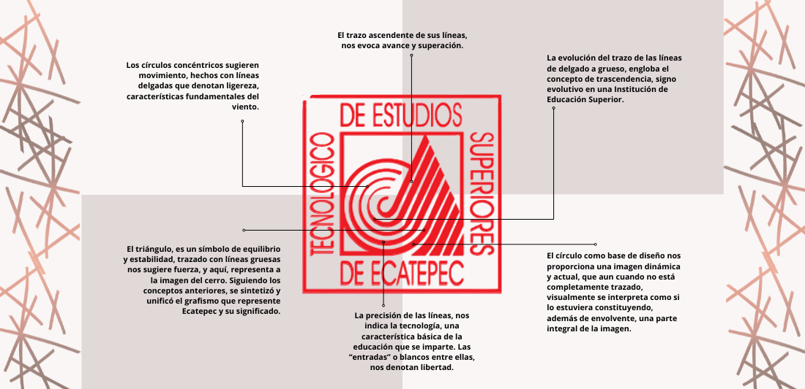

<div class="">
  <mat-drawer-container class="side-container">
    <mat-drawer mode="side"class="sidebar" id="side" #drawer opened>
      <mat-selection-list role="list-container" [multiple]="false">
        <a href="Historia">
          <mat-list-option>
            Historia
          </mat-list-option>
        </a>
        <a href="Mision">
          <mat-list-option role="/Logo">
            Mision Vision
          </mat-list-option>
        </a>

        <a href="http://www.tese.edu.mx/documentos2004/7285_BGNZNIQ.pdf">
          <mat-list-option role="/Logo">
            Organigrama
          </mat-list-option>
        </a>
      </mat-selection-list>
    </mat-drawer>

    <mat-drawer-content class="side-content">
      <button id="arrow" type="button" mat-button (click)="drawer.toggle()" (click)="open()">
        <mat-icon id="right" class="open">arrow_forward</mat-icon>
        <mat-icon id="left">arrow_back</mat-icon>
      </button>
      <mat-divider class="divider"></mat-divider>

    <div class="text-side">
      <div class="box-shadow= 50px 50px;">
        <nav arial-label="breadcrumb">
          <ol class="breadcrumb">
            <li class="breadcrumb-item"><a class="color-nav" href="#">Home</a></li>
            <li class="breadcrumb-item"><a class="color-nav" href="#">Identidad Institucional</a></li>
            <li class="breadcrumb-item active" aria-current="page">Logo</li>
          </ol>
        </nav>
      </div>
    </div>

    <app-carousel [items]="carouselData"></app-carousel>
    <h1 class="text-center fs-4 fw-bold shadow p-3 mb-5 bg-body rounded">LOGO</h1>
    <div class="lh-sm fs-4 shadow p-3 mb-5 bg-body rounded">
      <p>
      El diseño de la imagen que identifica al TESE,
      reviste un triple significado: retoma, en primera instancia el topónimo de Ecatepec,
      que en náhuatl significa Cerro del Viento.
    </p>
    <br>
    <p>
      Expresa también el carácter industrial del municipio, al quedar representado el Centro de evaporación "El Caracol".
      Perteneciente a la empresa más antigua de la zona, Sosa Texcoco. Su configuración geométrica,
      formada por círculos, triángulos y el cuadrado, simboliza el carácter tecnológico de la institución.

    </p>
    </div>

     <div class="shadow text-center p-3 mb-5 bg-body rounded">
       <p>
         
       </p>
      <br>
      <h1 class="text-center fs-4 fw-bold mb-3">TECNOLÓGICO DE ESTUDIOS SUPERIORES DE ECATEPEC</h1>
    </div>


    </mat-drawer-content>
  </mat-drawer-container>
  </div>
